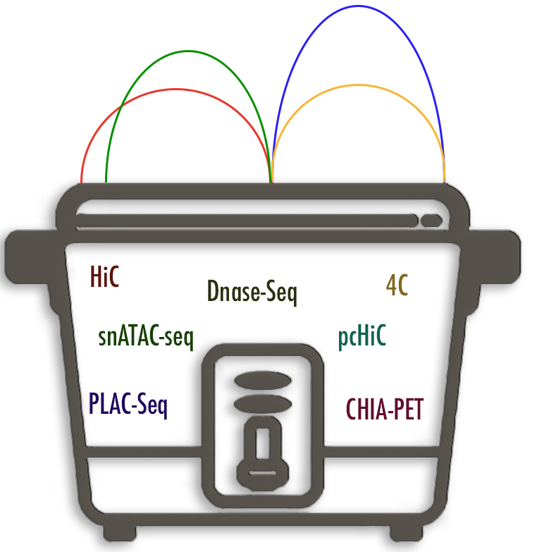

CROCPOT
ChROmatin-based Collection of Predicted Target genes
Load Chromatin and GWAS studies from database
Chromatin Studies
Genome-wide Association Studies
Upload your Chromatin Study Track
File format
Load Track
Explore by chr:start-end or Gene Name or rsid
Go
Invalid position. Must be in chrom:start-end format.